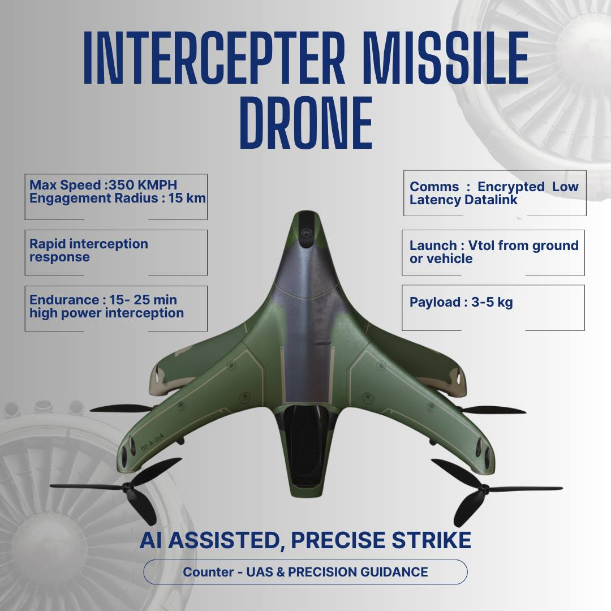

Robotics Lead at Otonomy.AI, building factory-embedded data collection systems for humanoid manipulation. Architecting Mally AI - an agentic framework for robot task planning. Deep expertise in UAV flight control, FOC actuators, and multi-modal robotics. Former UAV Systems Engineer with 100+ autonomous flights across multirotor, VTOL, and UGV platforms.
# Otonomy.AI - Humanoid Data Infrastructure
# Factory-embedded manipulation data collection
class HumanoidDataPipeline:
"""
30K+ hours captured | 3M+ trajectories
10-15mm pose accuracy | 24/7 pipeline
"""
def __init__(self):
self.capture_system = MultiCameraCapture(
egocentric="head-mounted",
wrist_cameras=2,
mocap_ground_truth=True
)
self.extraction = PoseExtractionPipeline(
model="SAM 3D + Depth Pro",
accuracy="10-15mm"
)
def process_trajectory(self, video_stream):
# 3D hand joint sequences
depth = self.depth_estimation(video_stream)
pose_3d = self.sam_body_estimation(depth)
# Multi-view triangulation
trajectory = self.temporal_smoothing(
self.multi_view_fusion(pose_3d)
)
# Physics validation
return self.biomechanical_validation(trajectory)Leading the development of humanoid data infrastructure for factory-embedded manipulation data collection. Building end-to-end pipelines from video capture to training-ready trajectory datasets.
Factory-embedded data collection systems capturing 30K+ hours of manipulation data with 10-15mm pose accuracy using multi-camera capture and motion capture ground truth.
State-of-the-art 3D hand trajectory extraction combining pose estimation with monocular depth, temporal smoothing, and physics-based quality validation.
GPU compute clusters with petabyte-scale storage, streaming delivery, and comprehensive API endpoints for humanoid training data access.
Humanoid robots need to learn manipulation from human demonstrations. Current approaches don't scale: teleoperation is expensive and limited to labs, simulation has sim-to-real gaps, and internet video lacks depth and ground truth.
Factory-embedded researchers capturing real-world manipulation data with head-mounted egocentric cameras and dual wrist cameras integrated with motion capture.
Automated extraction of high-fidelity hand trajectories with state-of-the-art pose estimation and depth-enhanced extraction.
Training-ready trajectory datasets for humanoid robot learning systems with standardized formats and API access.
Building end-to-end autonomous systems that perceive, reason, and act in unstructured environments. Integrating foundation models with robotic control for general-purpose manipulation.
Architecting Mally AI, an agentic framework enabling robots to understand natural language instructions, plan multi-step manipulation tasks, and execute with feedback loops.
LLM-based parsing of human instructions into structured robot tasks
Automatic breakdown of complex tasks into executable primitive actions
CLIP-based alignment of language concepts to visual observations
Real-time feedback with failure detection and replanning
Designing high-performance actuation systems for humanoid robots including cycloidal drives, harmonic actuators, and FOC-based motor controllers with custom STM32 firmware.
Zero-backlash high-ratio reduction gearbox for precision joint control. Roller contacts provide high torque density and shock resistance for humanoid applications. Harmonic alternative for compact joints.
Precision Motor Control for Humanoid Robotics
High-resolution absolute position feedback for closed-loop FOC control. Sin/Cos interpolation with error compensation. Critical for servo-grade precision in humanoid joints.
FOC provides smooth torque control for brushless motors by decoupling torque and flux components via dq-transformation. Enables servo-grade precision with zero-speed torque holding.
Iα = Ia
Iβ = (Ia + 2Ib) / √3
Converts 3-phase currents to stationary αβ reference frame
Id = Iα·cos(θ) + Iβ·sin(θ)
Iq = -Iα·sin(θ) + Iβ·cos(θ)
Rotates to rotor-aligned dq frame. Id = flux, Iq = torque
Former UAV Systems Engineer with 100+ autonomous flights. Expert in PX4/ArduPilot firmware, GNC systems, and mission-critical autonomous operations.

GPS-denied navigation system with IP-over-Ethernet at 1000 Mbps over 5-15 km optical fiber spool. Implements Visual-Inertial Navigation System (VINS) with Extended Kalman Filter (EKF) for sensor fusion.
Radar-guided autonomous interception system with tandem-wing airframe, elevon control surfaces, and proportional navigation guidance. Tube-launched from pressurized system with high-G acceleration handling.
Autonomous delivery quadcopter with 12 kg payload capacity and 70-minute endurance for mountainous logistics in Western Ghats. Features transition control between hover and forward flight.
Ackermann-steered rover with 45 kg payload using eBike hub motor and STM32 PWM control. 6-DOF manipulator for pick-and-place with ROS2 middleware.
Professional UAV ground control station with real-time telemetry, mission planning, and flight simulation
Humanoid Data Infrastructure
Hyderabad, India
Multi-location India Operations
International Conference on Circuit, Power and Computing Technologies (ICCPCT) | August 2023
DOI: 10.1109/ICCPCT58313.2023.10245325
System architecture using Pixhawk 6C + GSM/5G modem + Firebase AWS backend for warehouse goods management.
Robo War Competition, JNNCE Karnataka
Fixed-Wing Aircraft Design, Anna University
Year Achiever Award - Autonomous Boat, PTU
Open to collaborations in humanoid robotics, autonomous systems, and AI-powered robot control. Currently leading robotics at Otonomy.AI and building Mally AI.